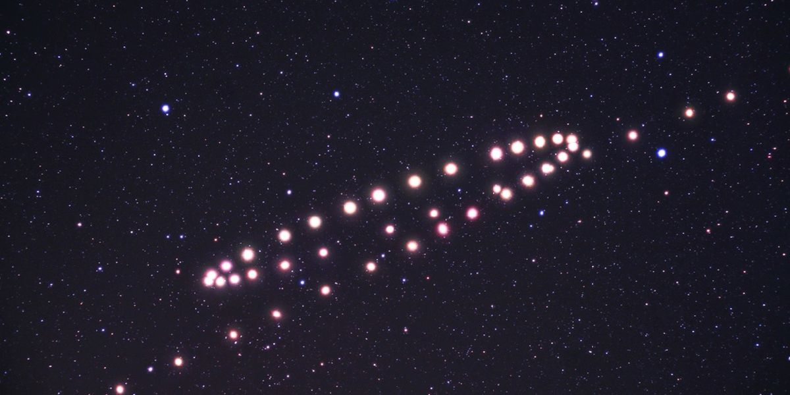
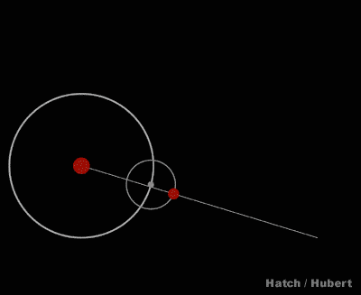

Astronomy 101

How can one explain this motion?
This motion stumped so many astronomers along time ago. They still believed that the other celestial bodies orbitted Earth. This belief is called geocentrism. Luckily a Roman astronomer came up with an idea that will be used for 14 centuries.
This astronomer is originally from Alexandria, and he is the same Ptolemy that is discussed in the Ancient Greeks section

Ptolemy introduced a system of deferents and epicycles. A deferent is a large circular path around the Earth, while an epicycle is a small circle that moves within the deferent.
The planet is located at a point on the epicycle, and the epicycle moves along the deferent. The combination of the two circular motions produces the observed motion of the planet.
Ptolemy's system of deferents and epicycles was complex and required numerous adjustments to account for the observed movements of the planets. However, it was able to explain the
irregular motion of the planets with a high degree of accuracy, and it remained the dominant model of the universe for over a thousand years. The Ptolemaic system was further developed by Islamic astronomers, who introduced new mathematical techniques and refinements to the theory.
Why was this system used for 14 centuries?
- It was very accurate the model did not fail, however when it failed you can just add another epicycle
- It was compatible with the knowledge of the time
- Easy to use and understand
- No other well made alternatives
- Most importantly, it fit with what the eye can see
All images utilized in this project were obtained from sources other than my own.